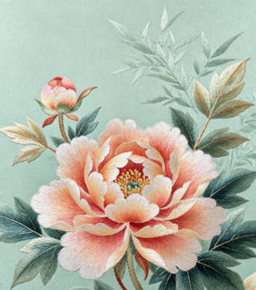

非物质文化遗产
传承千年匠心，守护文化根脉。每一项技艺都历经代代匠人打磨，保留着最原汁原味的东方手工美学，是学生研学、课题写作的优质资料。

苏绣
苏绣起源于苏州，拥有两千多年历史，在明清两代达到鼎盛。针法多达四十余种，针脚细密平整，色彩层次丰富。从花鸟小品到人物肖像都可以完美呈现。时至今日，苏绣不断融合现代美术设计，实现非遗技艺的创新传承，是手工艺术类作业非常经典的选题。
适合手工课作业景德镇陶瓷
景德镇自古被誉为千年瓷都，烧制技艺历经上千年不断完善。瓷器质地白如玉、明如镜、薄如纸、声如磬。从制坯、绘画到入窑烧制，整套工序繁复严谨。陶瓷文化不仅是古代手工业的顶峰，也是大学生传统文化研学实践的热门项目。
大学生研学素材京剧
京剧被称作国粹，形成于清代，融合了多个地方戏曲的精华。讲究唱、念、做、打四门基本功，划分生、旦、净、丑四大行当。五颜六色的脸谱对应人物性格，程式化的舞台表演极具东方艺术美感，适合艺术赏析类课程作业。
艺术赏析作业苏州评弹
苏州评弹是江南代表性曲艺，只用琵琶与三弦伴奏，配合吴侬软语娓娓讲述故事。唱腔婉转柔和，叙事细腻生动。评弹保留了大量江南民间故事与市井文化，是研究江南民俗文化不可或缺的内容。
民俗科普素材端午赛龙舟
赛龙舟是流传千年的集体民俗活动。最初用于祭祀龙神，后来逐渐和纪念屈原的传说结合。众人合力划桨，讲究团结协作，既是节日仪式，也是极具凝聚力的集体活动，很适合高校社团开展团建活动。
节日活动参考元宵灯会
元宵节灯会是古代最热闹的市井狂欢。在古时，女子平日不能随意出门，唯有元宵可以夜游赏灯、猜灯谜，灯会也成为古人青年男女相遇交友的浪漫场合。灯会民俗完整保留了市井烟火气息。
社团活动策划参考